Mon site
Le développement web m'a toujours rendu curieux, j'ai donc décidé de créer mon propre site internet afin de pouvoir apprendre le HTML, le CSS ainsi que le Javascript. J'ai fait le choix de ne pas travailler avec un Framework afin d'avoir totalement la main sur ce que je faisais de A à Z, même si ça s'accompagnait de son lot d'embûches. C'est la raison pour laquelle le site n'est pas totalement optimisé selon l'appareil. J'ai pour projet de refaire le site avec un Framework maintenant que je maîtrise les bases, afin que ce soit + beau, ainsi qu'une nouvelle section "Blog" qui servira à réaliser ma propre veille technologique, tout au long de mes études.
Version 1
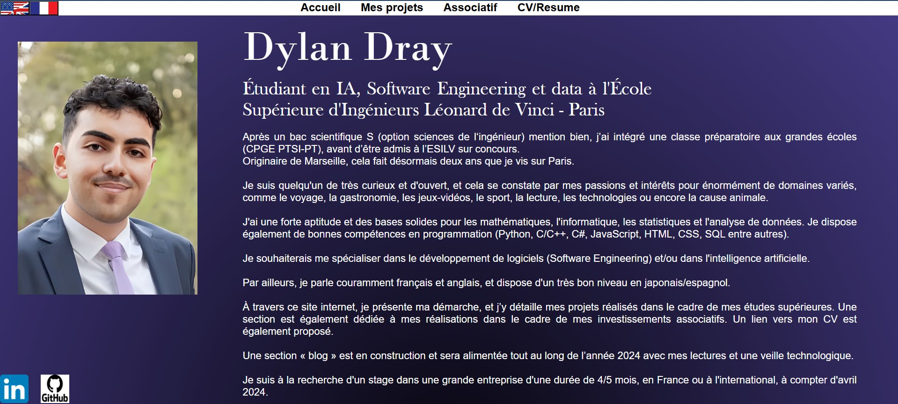
Version 2 — Refonte complète
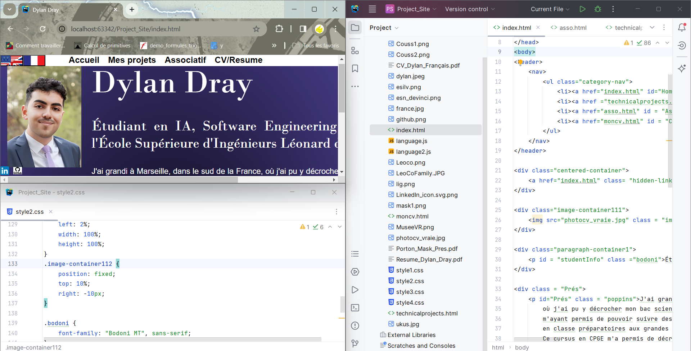
Après avoir acquis de l'expérience en développement web et en design, j'ai décidé de revoir entièrement le site. Voici les principaux changements apportés par rapport à la première version : La mise en page de la page d'accueil a été repensée : la photo de profil et le nom sont désormais disposés côté à côté, avec un système d'accordéons dépliables pour présenter les différentes sections biographiques, rendant la page plus aérée et plus agréable à lire. La typographie a été unifiée sur l'ensemble du site avec les polices Garamond et Poppins, apportant un aspect plus professionnel et cohérent. Les couleurs ont également été harmonisées autour d'une palette violette et lavande. Des boutons de sélection de langue (🇬🇧 / 🇫🇷) et des icônes LinkedIn et GitHub stylisées ont été ajoutés sur toutes les pages du site. La page CV a également été restructurée pour afficher les deux versions (FR et ENG) côte à côte de façon symétrique. Enfin, le site a été optimisé pour les petits écrans : les éléments se réorganisent automatiquement sur mobile et les textes s'adaptent à la taille de la fenêtre grâce à l'utilisation de tailles fluides (clamp).
ML Model Deployment (FastAPI & Docker)
La stack technique repose sur FastAPI, Docker, Uvicorn et Pydantic. Ce projet traite de la conteneurisation et du déploiement d'un modèle de Machine Learning. En m'appuyant sur FastAPI, j'ai développé une API REST performante pour gérer les requêtes, tandis que Docker assure la cohérence des environnements entre le développement et la production. L'ensemble inclut une documentation automatisée et des pipelines d'inférence optimisés.
Le choix de FastAPI s'est imposé par sa capacité à gérer l'asynchrone et sa rapidité d'exécution, surpassant des frameworks plus traditionnels. L'intégration de Pydantic permet de sécuriser les points d'entrée en effectuant une validation de schéma rigoureuse des données avant qu'elles n'atteignent le modèle, limitant ainsi les erreurs en production. Pour garantir une portabilité totale, l'application est encapsulée dans une image Docker. Cette approche résout les conflits de dépendances et simplifie le passage vers des infrastructures Cloud ou des serveurs dédiés sans modification du code source.
L'architecture privilégie l'efficacité opérationnelle en effectuant le chargement du modèle au lancement du serveur ASGI. Cela permet d'éliminer la latence lors de l'inférence sur des requêtes en temps réel. L'API expose également une interface Swagger UI interactive, facilitant l'intégration pour les services tiers sans nécessiter de rédaction manuelle de documentation. L'enjeu principal de ce travail réside dans l'industrialisation du Machine Learning (MLOps). Passer d'un environnement de recherche à un microservice stable et isolable est une étape critique que ce projet adresse directement, offrant une base solide pour des cycles de déploiement continu et une scalabilité accrue.
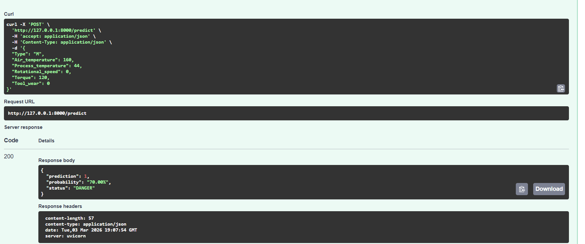
YouTube Topic Modeling
La stack technique repose sur Python, YouTube Data API v3 et BERTopic.\n\n Ce projet, dont l'intégration de BERTopic est actuellement en cours de développement en environnement local, consiste à extraire et analyser des données massives issues de YouTube pour identifier des thématiques latentes via des techniques de Topic Modeling. En exploitant la YouTube Data API, le système récupère les métadonnées et les commentaires, traités par des pipelines NLP pour le nettoyage et la tokenisation. L'objectif est de segmenter des volumes importants de texte en catégories cohérentes grâce à des algorithmes de Deep Learning.
\nLe choix méthodologique privilégie une approche basée sur les embeddings de transformateurs. L'utilisation de BERTopic permet de capturer le contexte sémantique des phrases, dépassant les limites des modèles classiques de sac de mots. Le prétraitement des données assure que seuls les termes porteurs de sens influencent la création des clusters. Cette architecture transforme des données brutes non structurées en vecteurs numériques exploitables pour la détection automatique de sujets émergents, permettant une analyse fine des interactions textuelles sous les contenus vidéo.
\nL'analyse prévoit une phase de visualisation des intertopic distance maps et de l'importance des c-TF-IDF pour caractériser chaque sujet identifié. Bien que le projet soit toujours en cours de finalisation, l'enjeu reste de fournir une solution d'intelligence économique pour le trend mapping. En automatisant l'extraction de connaissances à partir de sources vidéo, ce travail démontre une capacité à passer de la collecte de données brutes à une analyse sémantique complexe pour la compréhension des dynamiques d'audience à grande échelle.
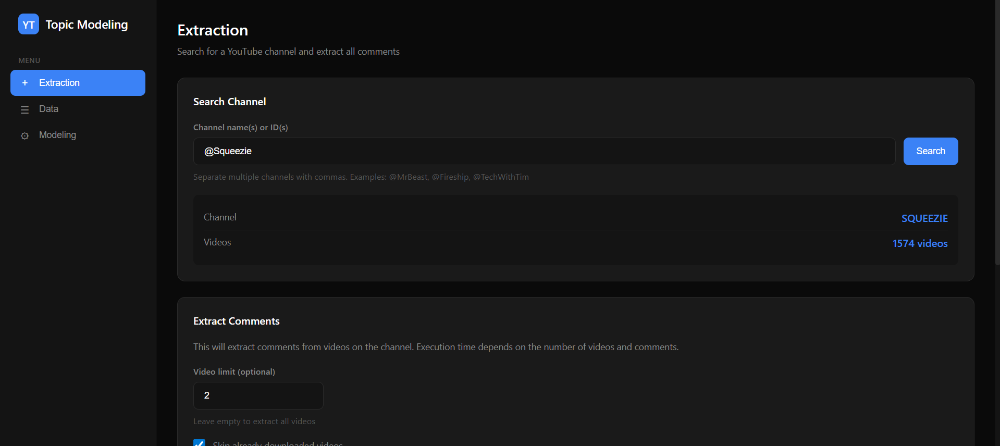
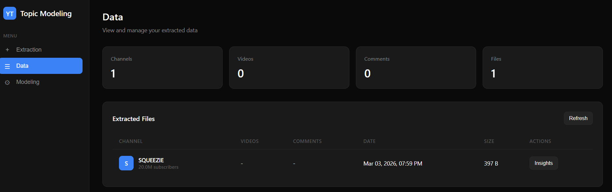
Musée VR Méditerranée
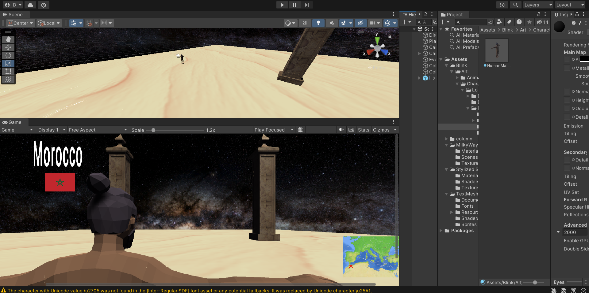
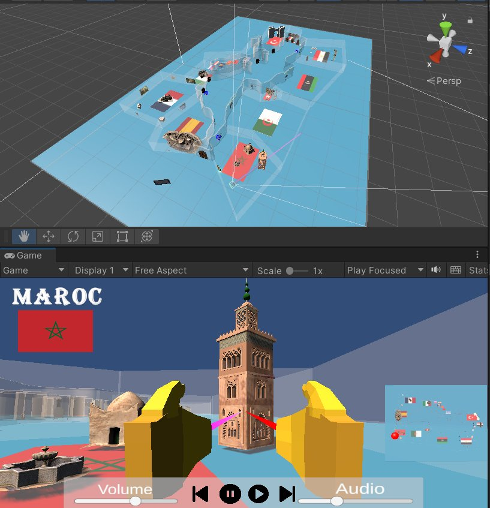
Réalisé dans le cadre de ma seconde année en école d'ingénieurs, en collaboration avec 4 autres étudiants, ce projet consiste en la création d'un musée en monde ouvert explorant le pourtour méditerranéen à travers les époques. Développé sur Unity (C#), le projet est aujourd'hui terminé. En charge de l'ensemble de la partie UI et du gameplay, j'ai notamment conçu la barre de lecture audio (avec contrôles play/pause/suivant, réglage du volume et gestion de la playlist), le système de son spatialisé par zone, ainsi que la localisation précise du joueur sur la carte interactive. J'ai également développé l'ensemble des déplacements et des interactions joueur au sein de l'environnement VR.
AIxMath
AIxMath est un projet à l'intersection de l'Intelligence Artificielle et des mathématiques avancées. Il explore l'utilisation des réseaux de neurones pour résoudre des problèmes mathématiques complexes et optimiser les calculs numériques. Le projet met en avant la synergie entre la rigueur algorithmique et la flexibilité du machine learning pour relever des défis en régression symbolique et modélisation mathématique.
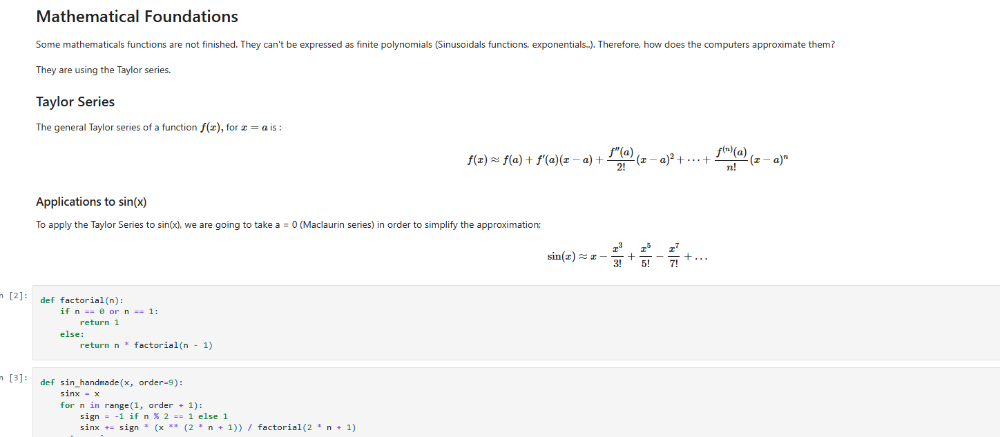
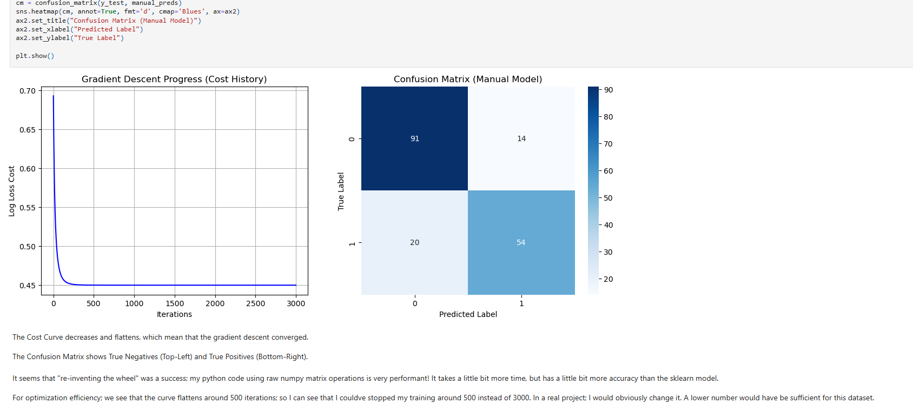
Port'On Mask
V1 : Détection du port du masque & ouverture de porte
La première version du Port'On Mask a été réalisé dans le cadre de mon projet de classe prépa, durant la pandémie du COVID-19, répondant au thème de "Santé et Prévention". Le principe de base de cette première version était simple : disposer une caméra devant des établissements de santé, qui à l'époque, manquant de personnel, se retrouvaient dans l'obligation de mettre des soignants à l'entrée des bâtiments ou des services hospitaliers, afin de vérifier le port correct du masque par les visiteurs. Le Port'On Mask V1 analysait donc de manière automatique un flux vidéo, afin de déterminer si une personne portait correctement son masque chirurgical, et ouvrait la porte si c'était le cas. Pour ce faire, j'ai utilisé le module OpenCV en Python, qui m'a permis de détecter les éléments essentiels à la détection du port du masque (nez et bouche) dans un visage. Afin d'optimiser la recherche, j'ai normalisé l'intensité des images et ajouté un filtre temporel (moyenne mobile). Les résultats furent probants, le programme reconnaissait le port du masque (ou du moins, dans cette version, l'absence de nez et de bouche) et ouvrait la maquette d'une porte de manière automatique, à l'aide d'un raspberry Pi et de sa Picaméra.
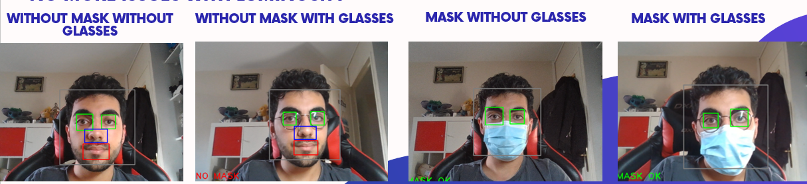
V2 : Reconnaissance d'identité, base de données et améliorations
La seconde version du Port'On Mask a été réalisé en 2023, dans le cadre de ma première année d'étude en école d'ingénieurs. Une expérience personnelle que j'ai vécu dans un centre de santé m'a encouragé à reprendre ce projet et à l'améliorer.
En effet, lors d'une visite dans un centre de santé j'ai pu observer une mauvaise gestion des flux, une secrétaire débordée et des patients perdus. J'ai décidé d'intégrer un système de reconnaissance faciale masquée, reliant l'identité d'une personne masquée à son profil enregistré dans une base de données, tout en lui fournissant des indications précises sur le lieu du rendez-vous dans le bâtiment, le nom du médecin et l'heure. Dans un premier temps, j'ai amélioré la détection en identifiant la couleur et la forme du masque. Une fois cette détection accomplie, il est maintenant nécessaire de la faire correspondre à une identité. Dans la pratique, si c'est la première fois que la personne se rend dans le centre de santé, elle devra se rendre à l'accueil où elle fournira son identité, et la secrétaire se chargera de l'associer au visage de la personne dans la base de données. À partir de la deuxième visite, la personne est enregistrée. Dès lors, lorsqu'elle passera devant la caméra à l'entrée, le système la reconnaîtra, ouvrira la porte et affichera sur un écran l'emplacement de son rendez-vous, ainsi que les informations préalablement remplies lors de la prise de rendez-vous. Du point de vue technique, j'ai constitué une base de données de visages accessibles sur internet. J'ai ensuite ajouté un masque à ces visages à l'aide d'une intelligence artificielle. Dans un second temps, en utilisant mon modèle Haarcascade, j'ai conservé les images où un visage était clairement visible et détectable. Ensuite, j'ai appliqué le modèle dlib pour reconnaître la position des yeux et des sourcils, ce qui m'a permis de nettoyer la base de données des photos de mauvaise qualité, inclinées, etc. Ainsi, pour le moment, des mesures caractéristiques sont extraites des images restantes pour déterminer l'identité d'une personne. Les mesures caractéristiques ne suffisant pas à identifier une personne portant un masque, j'ai réfléchi à plusieurs idées pour améliorer cette reconnaissance. Je vous invite à télécharger le PDF pour obtenir plus d'informations sur les hypothèses et les conditions d'utilisation que j'ai retenues pour mon système.
SmartDream Pillow
SmartDream Pillow est un projet développé durant ma première année d'école d'ingénieurs, dans le cadre d'un Projet Innovant à Impact Positif (PIIP). L'objectif était de simuler la création d'une startup accompagnée d'un produit innovant. Pour pallier aux problèmes de réveil, j'ai proposé l'idée d'un oreiller connecté à mon groupe de travail, sur laquelle nous avons travaillé tout au long de l'année. Il s'agit d'un oreiller connecté qui réveille l'utilisateur au moment optimal pour lui garantir un réveil en douceur. De plus, de nombreux capteurs sont intégrés à l'oreiller pour collecter diverses données utiles pour la santé, telles que le taux d'oxygène et le pouls. Nous n'avons pas réussi à concevoir un oreiller confortable intégrant les capteurs, mais nous avons réalisé une maquette. J'ai principalement occupé les rôles de développeur en C++ et de Scrum Master en utilisant Jira. J'ai donc pu travailler sur du Deep Learning, à l'aide de Tensorflow for Arduino.
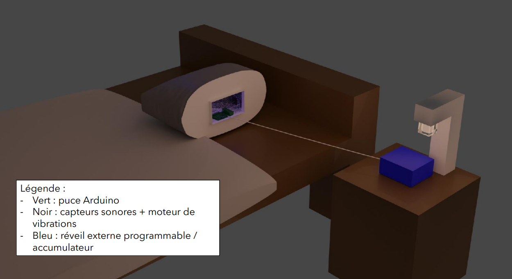
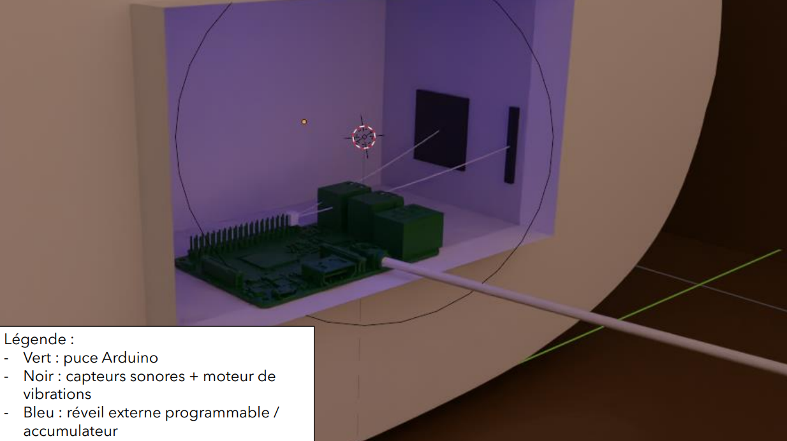